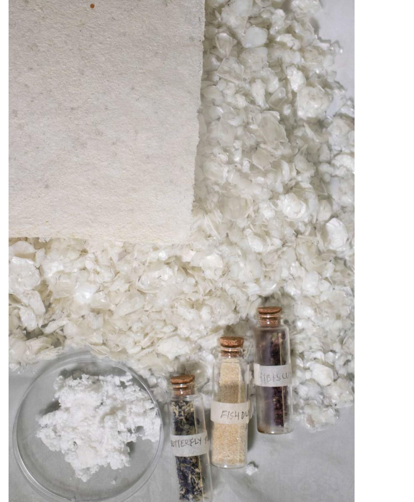
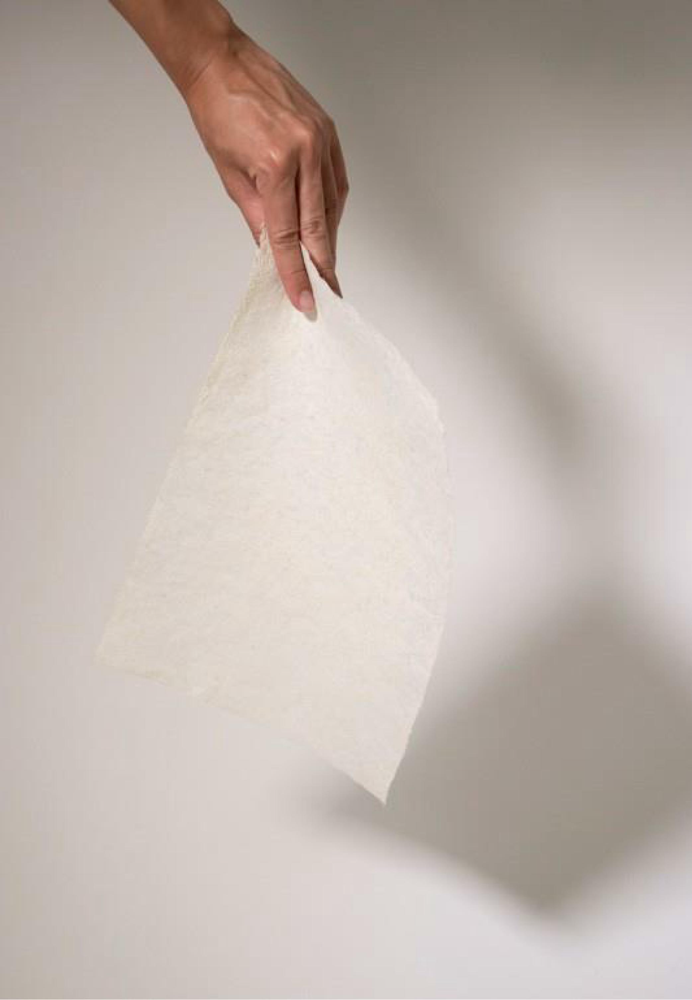

Formed from the fibrous residue of scale processing, this paper-like material explores translucency and texture.
The fibres create a textured, organic surface with subtle grain and real strength — ideal for writing, print, packaging or surface design. Nothing is added and nothing is wasted: it is the residue of the other three materials, given a language of its own.
BaseFibrous residue of scale processing
SourceBy-product of the other materials
FinishSoft, cloud-white, subtly grained
End of lifeFully biodegradable
ApplicationsPrint, packaging, writing, surface design


The residue of the other three materials, given a tactile language of its own.

© 2026 LAMI TEXTILES — POULAMI SAHA